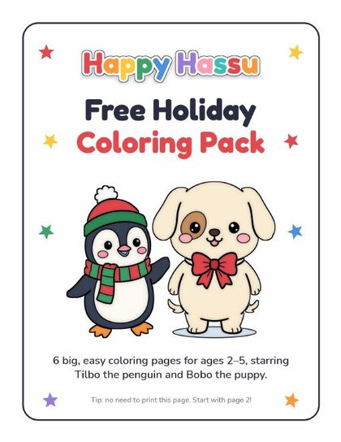

You're in! 🎉
Thank you for joining the Happy Hassu family. Your free coloring pack is ready: six big, easy pages with Tilbo and Bobo. We've also emailed you the link, so you can print them again anytime.
Download my pagesTips for happy coloring
- Print on regular letter paper, one page at a time. You can skip the first page.
- Chunky crayons are perfect for small fists.
- Coloring outside the lines is totally fine. It's how little hands learn!
Want lots more pages?

My First Christmas Coloring & Activity Book
See it on Amazon